This chartbook is a first look at who the 1M Care Conversations campaign is reaching and what people are saying. It covers responses received through September 1, 2026.
Three things to keep in mind while reading:
The three tools (the digital survey, canvassing, and interviews) are shown separately throughout and never added together. They reach different people in different ways.
These are the people who chose to respond. The numbers shown here describe respondents and are not nationally representative.
Survey counts include people who stopped partway through. Each chart says which respondents it is based on.
The Cleaning page explains how the raw exports were handled.
How many responses
Responses received by tool. A “partial” response is one where the person stopped before the end; for the survey that usually means before the demographic questions.
Responses by week. The survey’s peaks line up with the coalition’s outreach pushes (the May 29 launch and the July 21 Virtual Day of Action).
Show code
bind_rows(survey =select(survey, submitted_at),canvassing =select(canvassing, submitted_at),.id ="tool") |>count(tool, week =floor_date(as_date(submitted_at), "week")) |>ggplot(aes(week, n)) +geom_col() +facet_wrap(~tool, ncol =1, scales ="free_y") +scale_x_date(date_labels ="%b %e") +labs(title ="Responses received per week", x =NULL, y ="Responses")
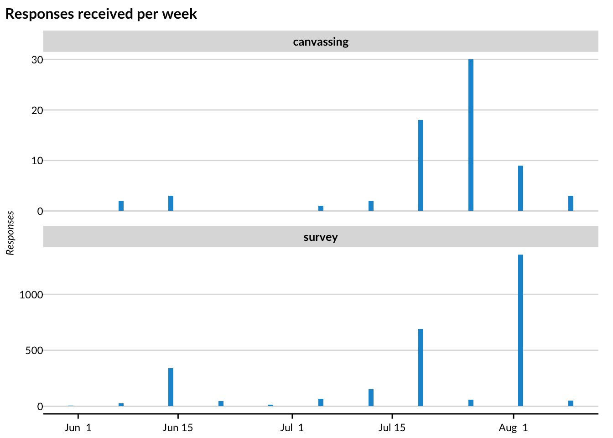
Where responses come from
The survey asks for a ZIP code at the start of the demographic section, so we have one for 2034 of the 2872 survey respondents (the rest stopped before that point). Canvassing records the canvasser’s ZIP, not the respondent’s, so it tells us where conversations happened. Interviews are placed by the ZIP in each transcript’s header; a group session carries one ZIP for everyone in the room, and one transcript has no ZIP at all.
Show code
# USDA ERS 2020 Rural-Urban Commuting Area codes by ZIP code (Sept 2025# release). Gives each ZIP its state and a 1-10 rurality code. Downloaded# once into data/raw/reference/ (not committed).ruca_path <-here("data/raw/reference/ruca2020_zip.csv")if (!file.exists(ruca_path)) {dir.create(dirname(ruca_path), showWarnings =FALSE)download.file("https://www.ers.usda.gov/media/5444/2020-rural-urban-commuting-area-codes-zip-codes.csv", ruca_path, headers =c("User-Agent"="Mozilla/5.0") )}zip_lookup <-read_csv(ruca_path, col_types =cols(.default ="c")) |>transmute(zip = ZIPCode, state = State, ruca =as.integer(PrimaryRUCA))zip_state <-select(zip_lookup, zip, state)# a few people typed ZIP+4 ("97530-0524"); the first five digits are the ZIPsurvey_state <- survey |>filter(!is.na(zip)) |>mutate(zip =str_sub(zip, 1, 5)) |>left_join(zip_lookup, by ="zip")canvassing_state <- canvassing |>filter(!is.na(canvasser_zip)) |>left_join(zip_state, by =c("canvasser_zip"="zip"))# ZIP from each transcript's header (verified 2026-09-17), entered by hand# until the coalition provides an interview metadata sheetinterviews <-tribble(~transcript, ~format, ~zip,"nopii_grp-sf_00000_othr_20260801", "group, short form", "60174","nopii_grp-lf_00000_othr_20260811", "group, long form", "49712","nopii_idv-lf_00000_othr_20260818", "individual, long form", "60302","nopii_ind-lf_00000_othr_20260819", "individual, long form", "48840","nopii_idv-sf_00000_othr_20260821", "individual, short form", NA)interview_state <- interviews |>filter(!is.na(zip)) |>left_join(zip_state, by ="zip")states <-tibble(state =c(state.abb, "DC"),state_name =c(state.name, "District of Columbia"))# adults (18+) per state from the ACS 2024 1-year, pulled once and cached# like the national benchmarks belowacs_state_path <-here("data/raw/reference/acs2024_state_adults.csv")if (!file.exists(acs_state_path)) { tidycensus::get_acs("state", variables =sprintf("B01001_%03d", c(7:25, 31:49)),year =2024, survey ="acs1" ) |>summarise(adults =sum(estimate), .by = NAME) |>rename(state_name = NAME) |>write_csv(acs_state_path)}state_adults <-read_csv(acs_state_path, show_col_types =FALSE) |>filter(state_name !="Puerto Rico") |>mutate(share_us_adults = adults /sum(adults))# The Century Foundation's 2024 care-policy report card grade for each state# (Gutierrez et al. 2024), as tabulated in the Population Data Memo; entered# by hand because the report card is not available as datacare_grades <-read_csv(here("data/raw/reference/care_policy_grades_2024.csv"), show_col_types =FALSE)failing_grades <-c("F", "D-", "D", "D+")state_counts <-list(survey = survey_state,canvassing = canvassing_state,interviews = interview_state) |>imap(\(data, tool) count(filter(data, !is.na(state)), state, name = tool)) |>reduce(full_join, by ="state") |>full_join(states, by ="state") |>mutate(state_name =coalesce(state_name, state),across(c(survey, canvassing, interviews), \(x) replace_na(x, 0L)) ) |>left_join(care_grades, by ="state_name") |>left_join(select(state_adults, state_name, share_us_adults), by ="state_name") |>mutate(share_survey = survey /sum(survey)) |>arrange(desc(survey), state_name)share_failing <- \(x) sum(x[state_counts$care_policy_grade %in% failing_grades]) /sum(x)
Every state is listed, including those with no responses yet, so gaps are visible. Two columns give the comparison that matters for outreach: each state’s share of all survey respondents next to its share of US adults, so a state with a much smaller survey share than population share is one the campaign is under-reaching. The grade is the state’s score on the Century Foundation’s 2024 care-policy report card, which the coalition’s outreach guidance uses to prioritize states with D and F grades. Those states hold 61% of US adults and 47% of survey respondents so far. Click a column heading to sort.
9 survey ZIP codes and 2 canvasser ZIP codes did not match a real ZIP (for example, 00000) and are left out of the table.
Show code
state_counts |>filter(survey >0) |>slice_max(survey, n =15) |>mutate(state_name =fct_reorder(state_name, survey)) |>ggplot(aes(survey, state_name)) +geom_col() +geom_text(aes(label = survey), hjust =-0.3, size =3) +scale_x_continuous(expand =expansion(mult =c(0, .1))) +labs(title ="Survey respondents by state, top 15",subtitle =str_glue("Among {nrow(survey_state)} respondents who gave a ZIP code"),x ="Respondents", y =NULL )
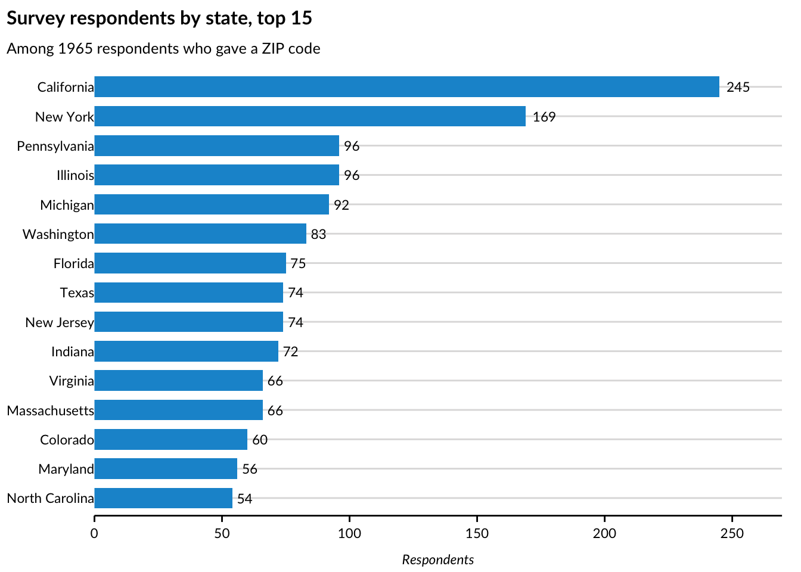
The same state table summarized two ways: by the care-policy grade band, and by Census region.
Show code
grade_band <- \(grade) case_when( grade %in%c("F", "D-", "D", "D+") ~"D or F", grade %in%c("C-", "C", "C+") ~"C", grade %in%c("B-", "B", "B+") ~"B",TRUE~"not graded")summarise_states <-function(data, by) { data |>summarise(States =n(), Survey =sum(survey),`Share of survey`=sum(share_survey), `Share of US adults`=sum(share_us_adults),Canvassing =sum(canvassing), Interviews =sum(interviews),.by = {{ by }} ) |>mutate(across(starts_with("Share"), \(x) percent(x, accuracy =1)))}state_counts |>mutate(`Care-policy grade`=factor(grade_band(care_policy_grade), levels =c("D or F", "C", "B", "not graded"))) |>summarise_states(`Care-policy grade`) |>arrange(`Care-policy grade`) |>tbl("Responses by care-policy grade")
Responses by care-policy grade
Show code
census_regions <-tibble(state_name =c(state.name, "District of Columbia"),Region =c(as.character(state.region), "South")) |>mutate(Region =recode(Region, "North Central"="Midwest"))state_counts |>left_join(census_regions, by =join_by(state_name)) |>summarise_states(Region) |>arrange(Region) |>tbl("Responses by Census region")
Responses by Census region
Rural and urban
The same ZIP lookup classifies each ZIP code by how rural it is, using the Rural-Urban Commuting Area (RUCA) codes from the USDA Economic Research Service. The codes run from 1 (inside a metropolitan area) to 10 (rural, far from any town), based on where people in that ZIP commute to work. We group them two ways: a four-way split used in much rural health research, and the urban/rural split the coalition asked for (Jaimie Worker, Caring Across Generations, September 2026), where “rural” is RUCA 4 to 10. That is also the cut the Health Resources and Services Administration’s Federal Office of Rural Health Policy uses to define rural for its programs.
Rural respondents are a smaller group, so splits within the rural categories are still thin. The urban/rural split is large enough to compare answers under the project’s subgroup standard (200 or more respondents per group). For example, what ideal care looks like:
Show code
show_rates_by(survey_state, "q6", urban_rural, "Ideal care, urban and rural respondents", chart =TRUE)
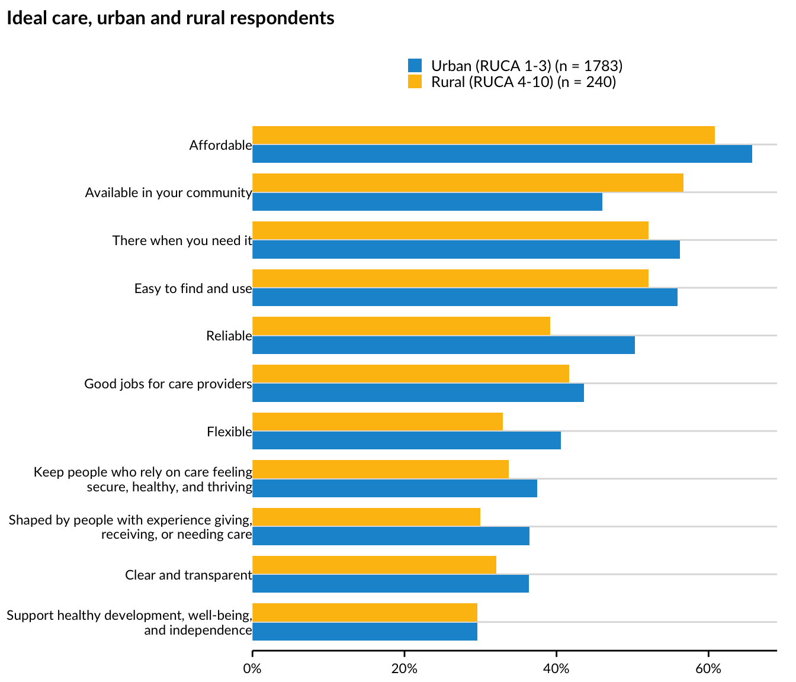
Ideal care, urban and rural respondents
One check on that definition. RUCA codes 2 and 3 are places within commuting range of a metropolitan core but outside it (suburbs and exurbs), and whether they count as urban or rural is a judgment call. The same question split three ways shows whether that choice matters: if the middle column looks like the first, the definition above is safe; if it looks like the last, counting 2 and 3 as rural would change the picture.
Show code
survey_state |>mutate(ruca_group =case_when( ruca ==1~"RUCA 1 (metro core)", ruca %in%2:3~"RUCA 2-3 (metro commuting)", ruca >=4~"RUCA 4-10 (rural)" ) |>factor(levels =c("RUCA 1 (metro core)", "RUCA 2-3 (metro commuting)", "RUCA 4-10 (rural)"))) |>show_rates_by("q6", ruca_group, "Ideal care by RUCA group", chart =TRUE)
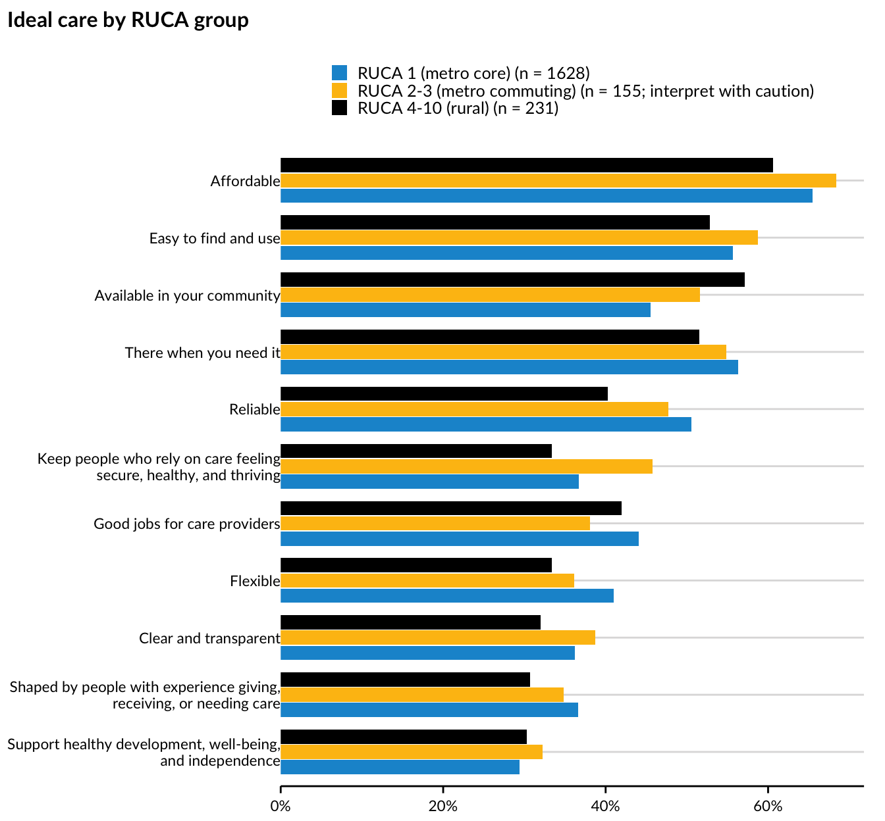
Ideal care by RUCA group
Who is responding to the survey
Only the survey asks demographic questions; canvassing and interviews do not. The tables in this section cover the 2093 survey respondents who reached the demographic section. Shares are among people who answered each question, and “Prefer not to say” is counted as an answer.
One category per person: anyone who chose Hispanic, Latino, or Latina is counted there whatever else they ticked; everyone else is non-Hispanic and gets their single race, or “Two or more races” if they ticked more than one. Categories are mutually exclusive.
Show code
share_table(demographics, race_ethnicity)
Gender
People could choose more than one answer. The first table counts each answer; the second shows every combination people actually chose, since the research team is deciding how to group them.
gender_boxes <- demographics |>filter(!is.na(gender_woman)) |>select(starts_with("gender_") &where(is.logical))gender_boxes |>mutate(combination =pmap_chr(pick(everything()), \(...) { ticked <-c(...)str_flatten(str_remove(names(ticked)[ticked], "gender_"), " + ") })) |>count(combination, name ="respondents", sort =TRUE) |>mutate(share =percent(respondents /sum(respondents), accuracy =0.1)) |>tbl("Gender, combinations chosen", page_size =15,note =str_glue("{sum(rowSums(gender_boxes) > 1)} of {nrow(gender_boxes)} respondents chose more than one answer."))
Gender, combinations chosen
35 of 2027 respondents chose more than one answer.
Household income
Show code
share_table(demographics, hh_income)
Household size
Show code
share_table(demographics, hh_size)
Disability or chronic health condition
Show code
share_table(demographics, disability)
Political views
Show code
share_table(demographics, political)
Compared with US adults
To see who the campaign is reaching and missing, each characteristic is set next to the same figure for the country, from the Census Bureau’s American Community Survey (2024 one-year estimates). This is context, not a claim that the survey resembles the population: respondents chose to take part, and the gaps are the point. “Prefer not to say” answers are left out of the survey shares here so the two columns add up the same way.
Some survey categories do not line up with the Census exactly; each table says how they were matched. Disability and political views are not compared: the Census defines disability differently, and there is no Census measure of political views.
gender_shares <- demographics |>filter(!is.na(gender_woman), !gender_prefer_not_to_say) |>summarise(Woman =mean(gender_woman), Man =mean(gender_man)) |>pivot_longer(everything(), names_to ="category", values_to ="survey")compare_table( gender_shares,tribble(~category, ~us,"Woman", acs_sum("B01001", 31:49),"Man", acs_sum("B01001", 7:25) ),"Gender","Survey: share of respondents choosing each (more than one allowed; non-binary and transgender have no Census counterpart). US figure: female and male population 18 and older.")
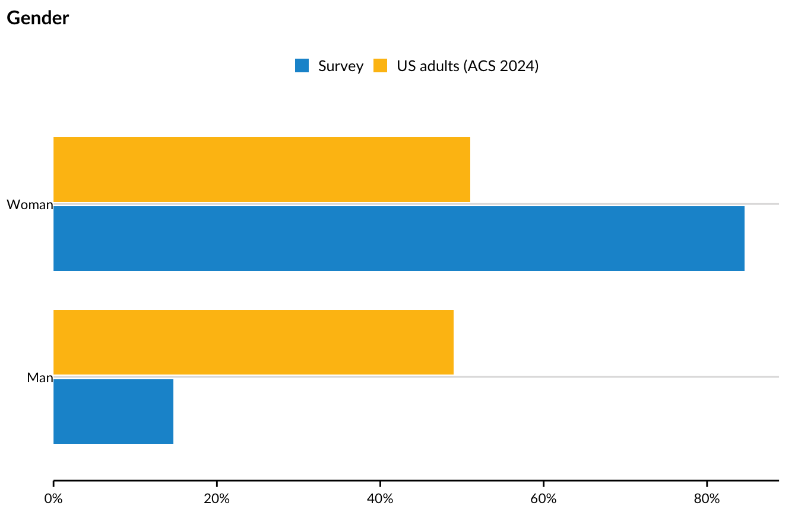
Gender
Survey: share of respondents choosing each (more than one allowed; non-binary and transgender have no Census counterpart). US figure: female and male population 18 and older.
Show code
compare_table(survey_shares(demographics, race_ethnicity, \(x) if_else(x =="Other", NA_character_, x)) |>filter(!is.na(category)),tribble(~category, ~us,"Hispanic, Latino, or Latina (any race)", acs["B03002_012"],"White", acs["B03002_003"],"Black or African American", acs["B03002_004"],"Asian or Asian American", acs["B03002_006"],"American Indian or Alaska Native", acs["B03002_005"],"Native Hawaiian or Pacific Islander", acs["B03002_007"],"Middle Eastern or North African", NA,"Two or more races", acs["B03002_009"] ),"Race and ethnicity","One mutually exclusive category per person in both columns; races other than Hispanic are non-Hispanic. The Census does not yet report Middle Eastern or North African separately, and its non-Hispanic 'some other race' (about 1%) is not shown. Survey 'Other' write-ins are left out.",us_total = acs["B03002_001"])
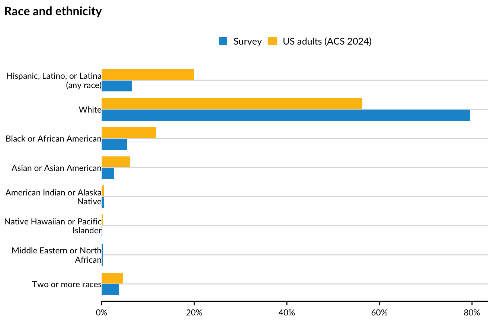
Race and ethnicity
One mutually exclusive category per person in both columns; races other than Hispanic are non-Hispanic. The Census does not yet report Middle Eastern or North African separately, and its non-Hispanic 'some other race' (about 1%) is not shown. Survey 'Other' write-ins are left out.
Show code
income_to_acs <- \(x) case_match( x,"Under $25,000"~"Under $25,000","$25,000-$49,999"~"$25,000-$49,999","$50,000-$74,999"~"$50,000-$74,999","$75,000-$99,999"~"$75,000-$99,999","$100,000-$149,999"~"$100,000-$149,999",c("$150,000-$174,999", "$175,000-$199,999") ~"$150,000-$199,999",c("$200,000-$249,999", "$250,000-$299,999", "$300,000 or more") ~"$200,000 or more")compare_table(survey_shares(demographics, hh_income, income_to_acs),tribble(~category, ~us,"Under $25,000", acs_sum("B19001", 2:5),"$25,000-$49,999", acs_sum("B19001", 6:10),"$50,000-$74,999", acs_sum("B19001", 11:12),"$75,000-$99,999", acs_sum("B19001", 13),"$100,000-$149,999", acs_sum("B19001", 14:15),"$150,000-$199,999", acs_sum("B19001", 16),"$200,000 or more", acs_sum("B19001", 17) ),"Household income","Survey brackets above $150,000 are combined to match the Census. Survey: respondents; US figure: households.")
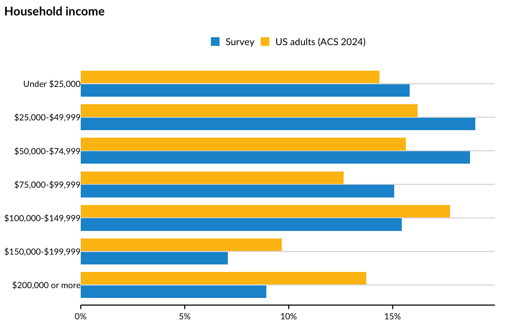
Household income
Survey brackets above $150,000 are combined to match the Census. Survey: respondents; US figure: households.
Show code
compare_table(survey_shares(demographics, hh_size, \(x) if_else(x =="1, just myself", "1", x)),tribble(~category, ~us,"1", acs_sum("B11016", 10),"2", acs_sum("B11016", c(3, 11)),"3", acs_sum("B11016", c(4, 12)),"4", acs_sum("B11016", c(5, 13)),"5", acs_sum("B11016", c(6, 14)),"6", acs_sum("B11016", c(7, 15)),"7 or more", acs_sum("B11016", c(8, 16)) ),"Household size","Survey: respondents; US figure: households. A person-based US figure would tilt toward larger households.")
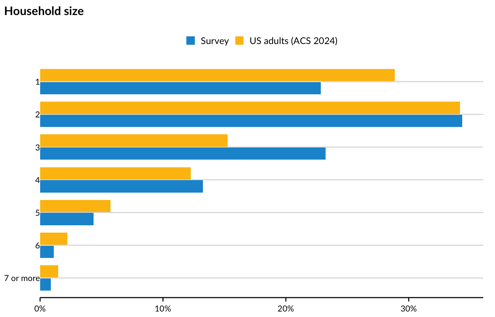
Household size
Survey: respondents; US figure: households. A person-based US figure would tilt toward larger households.
Connection to care
The first question asks about a person’s connection to care and routes them to one of five pathways. This decides which questions each person sees, so it shapes everything below. Current caregivers and care recipients are by far the largest group.
The answers behind the pathways. People could choose more than one.
Show code
survey |>selection_rates("q1") |>plot_rates("Connection to care (survey)",str_glue("Share of {nrow(filter(survey, !is.na(q1_child_now)))} respondents who answered; more than one allowed") )
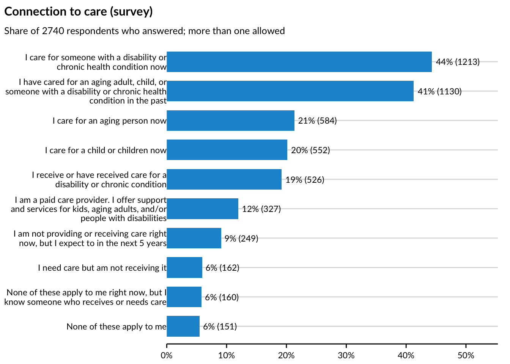
What people are saying
For each question, the chart shows the share of people who were shown the question choosing each answer, with the number of people in parentheses. Because the pathways see different questions, the group behind each chart is different; the subtitle says who.
Challenges for current caregivers and care recipients
Show code
q2a <-selection_rates(survey, "q2a")plot_rates( q2a,"What challenges have you experienced with care?",str_glue("Survey, current pathway, {unique(q2a$n_shown)} respondents"))
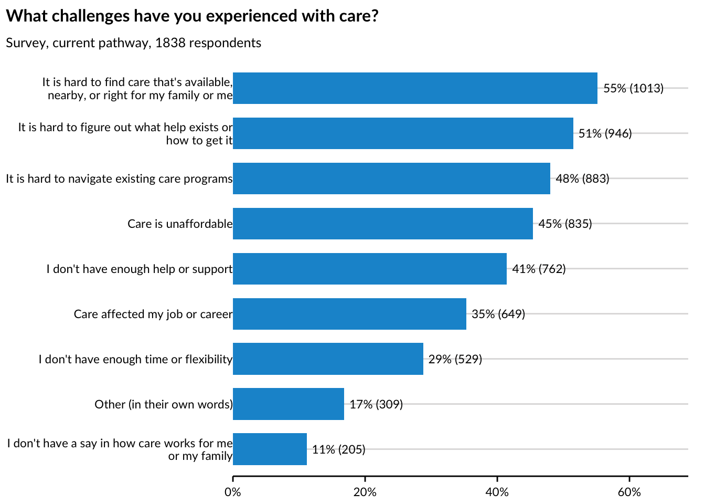
Supports that would make a difference for current caregivers and recipients
Show code
q3a <-selection_rates(survey, "q3a")plot_rates( q3a,"What care support would make a difference for you?",str_glue("Survey, current pathway, {unique(q3a$n_shown)} respondents"))
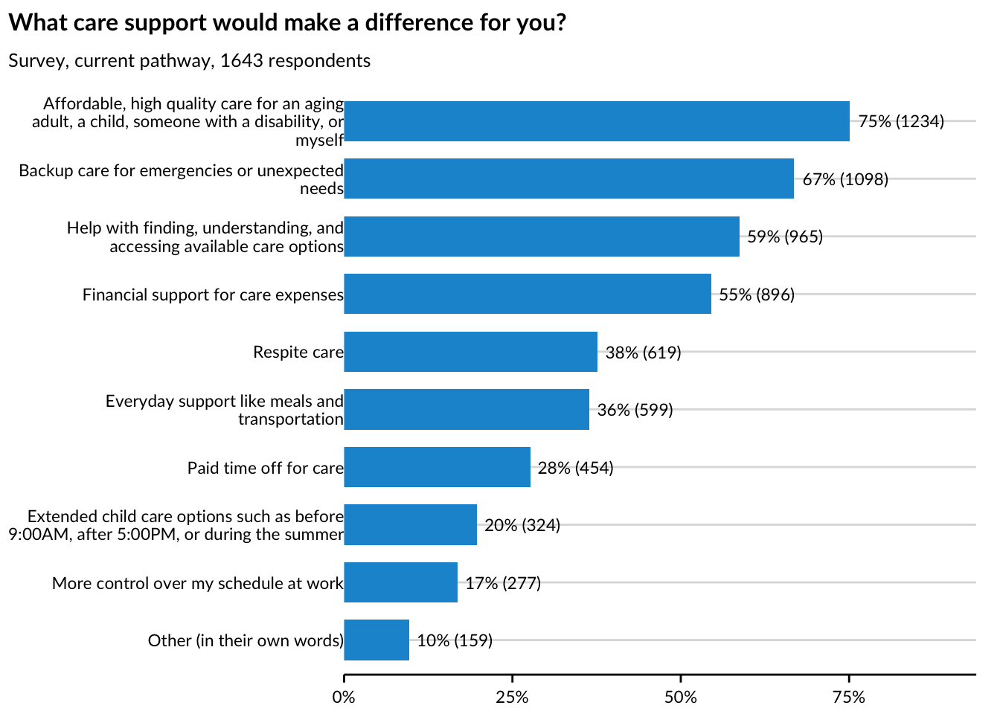
Who helps most with care
Show code
q4a <-selection_rates(survey, "q4a")plot_rates( q4a,"What or who helps you most with care? (top 3)",str_glue("Survey, current pathway, {unique(q4a$n_shown)} respondents"))
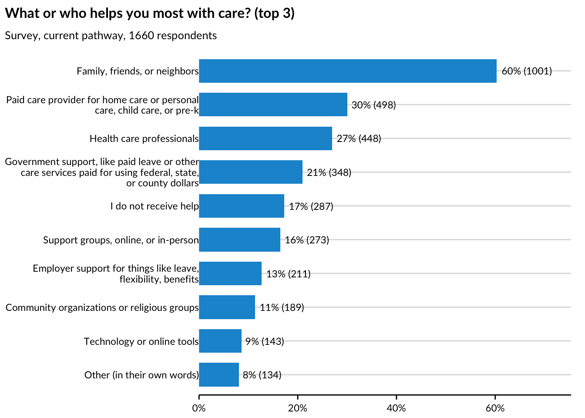
What ideal care would look like
Everyone sees this question regardless of pathway, so it has the widest base. It asks people to choose up to three answers, but the form does not enforce that: roughly four in ten respondents chose more, and some chose all eleven. The table shows shares two ways, among everyone and among only the people who kept to three or fewer. The order of the answers is nearly the same either way; what changes is how big the percentages are, and it is worth deciding which version to report.
Show code
q6_all <-selection_rates(survey, "q6")q6_n_chosen <- survey |>filter(!is.na(q6_affordable)) |>mutate(n_chosen =rowSums(across(starts_with("q6_") &where(is.logical) &!q6_other))) |>select(respondent_id, n_chosen)q6_within <- survey |>semi_join(filter(q6_n_chosen, n_chosen <=3), by ="respondent_id") |>selection_rates("q6")plot_rates( q6_all,"What would ideal care support and services look like for you?",str_glue("Survey, all pathways, {unique(q6_all$n_shown)} respondents"))
The same question, split by age, disability, household income, household size, and race and ethnicity. Each column is one group; the number in the heading is how many people in that group answered. The splits with few groups are also drawn as charts; the many-column splits are tables only. These splits follow the project’s standard for reporting on subgroups: a group with fewer than 50 respondents is not shown, a group with 50 to 199 is marked “interpret with caution,” and a group with 200 or more is reported plainly. With more responses these splits can extend to every question and every demographic.
Show code
show_rates_by(survey, "q6", age, "Ideal care by age")
Ideal care by age
Show code
show_rates_by(survey, "q6", disability, "Ideal care by disability or chronic health condition", chart =TRUE)
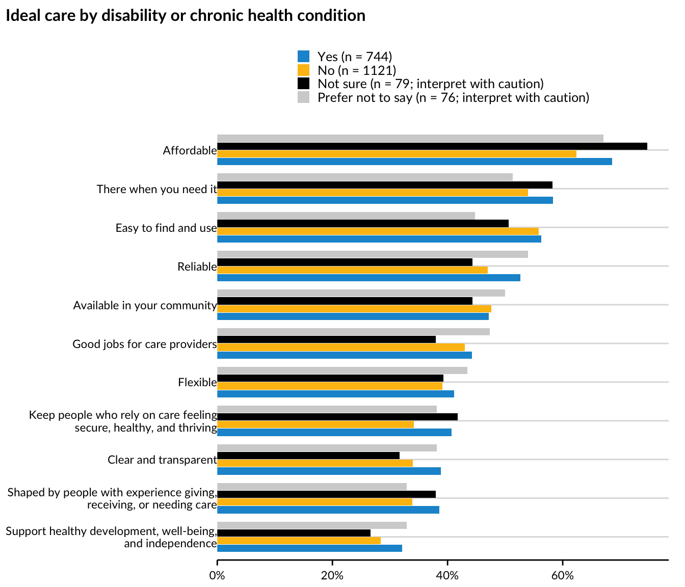
Ideal care by disability or chronic health condition
Show code
show_rates_by(survey, "q6", hh_income, "Ideal care by household income")
Ideal care by household income
Show code
show_rates_by(survey, "q6", hh_size, "Ideal care by household size")
Ideal care by household size
Show code
show_rates_by(survey, "q6", race_ethnicity, "Ideal care by race and ethnicity")
Ideal care by race and ethnicity
In their own words
Every choose-all-that-apply question has an “Other” box. Text written there is kept word for word and will be coded alongside the open-ended questions. Number of respondents who wrote something, by question:
Canvassing is a conversation, so it is a funnel: not everyone approached answers, and not everyone who answers has a connection to care. Each stage is a different base for any analysis.
Show code
funnel <-tibble(stage =c("Approached","Answered and engaged","Reports a connection to care" ),n =c(nrow(canvassing),sum(canvassing$responded =="Yes - continue with questions", na.rm =TRUE),sum(canvassing$care_connection =="Yes", na.rm =TRUE) )) |>mutate(stage =fct_rev(fct_inorder(stage)))ggplot(funnel, aes(n, stage)) +geom_col() +geom_text(aes(label = n), hjust =-0.5, size =3) +scale_x_continuous(expand =expansion(mult =c(0, .1))) +labs(title ="Canvassing funnel", x ="Contacts", y =NULL)
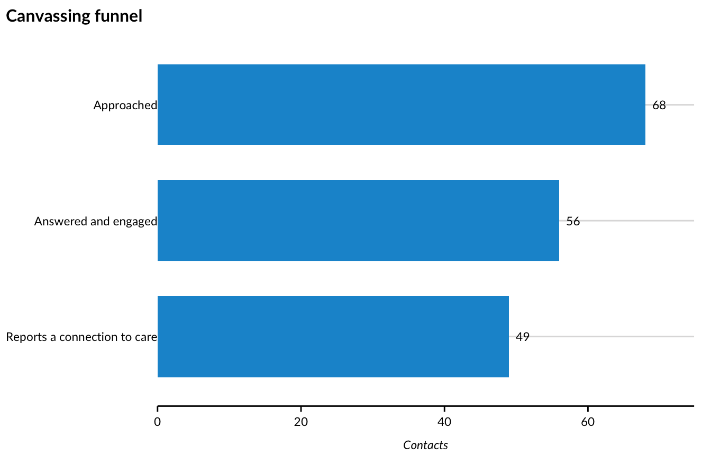
During the conversation, the canvasser records challenges from a short list before the full questions begin. This covers everyone who engaged, not just those who went on to the full questions.
Show code
canvass_challenges <-selection_rates(canvassing, "canvass_challenges")plot_rates( canvass_challenges,"Challenges mentioned during canvassing",str_glue("Canvassing, {unique(canvass_challenges$n_shown)} engaged contacts"))
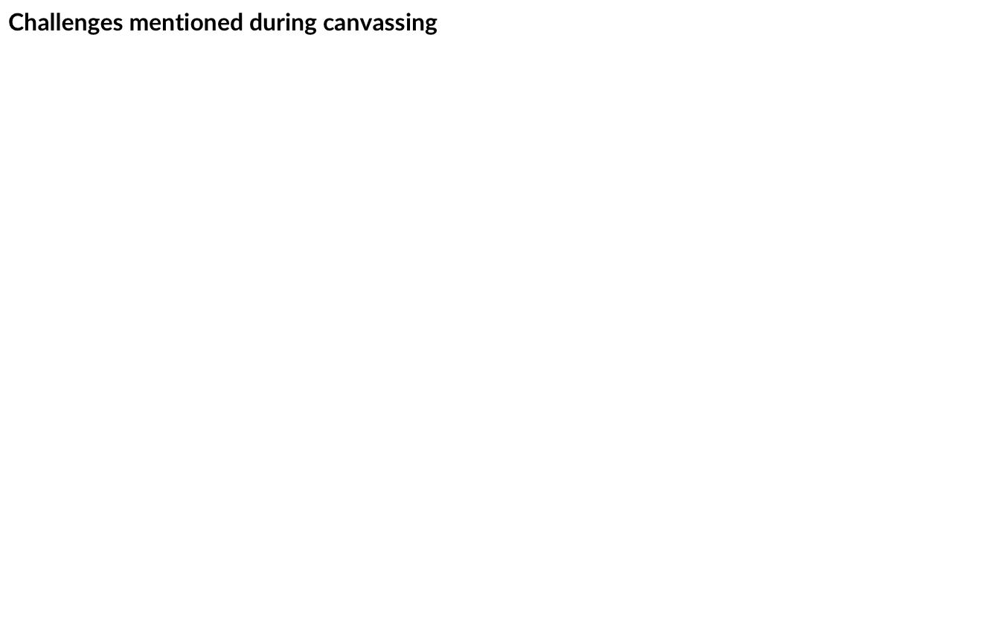
The revised form (August on)
In August the coalition changed the canvassing form: the yes/no connection-to-care question and the challenge checklist were replaced by “Do you need care or is there someone in your life you help take care of?” and a free-text “What’s been hard about that?” There are three versions of the revised form, with different questions; almost all responses so far come from the Daisy Chain event (c2), which asked only the two new questions. Because the questions differ, these contacts are kept apart from the funnel and challenge charts above.
canvassing_revised |>mutate(screener =fct_na_value_to_level(screener, "Not answered")) |>count(screener, wrote_text =!is.na(hard_text), name ="contacts") |>rename("Needs care or helps care for someone"= screener,"Wrote something for \"What's been hard\""= wrote_text) |>tbl()
The 68 free-text answers are respondents’ own words and go to the text analysis with the open-ended survey questions.
Interviews
Five interview transcripts have been delivered: two group sessions and three individual interviews, in Illinois and Michigan (one transcript carries no ZIP code). Interview content is being coded against the project codebook and reported in the coding dashboard.
Show code
interviews |>left_join(zip_state, by ="zip") |>left_join(states, by ="state") |>select(transcript, format, zip, state = state_name) |>tbl()
Not in this chartbook yet
Rural detail: rural respondents can be split further (small towns, remote areas, commuting patterns) once there are enough of them.
Open-ended answers: the survey’s and canvassing’s open-text questions are coded separately once the codebook is updated.
The Spanish survey link: no responses have been delivered from it yet; they will flow into the same charts when they arrive.